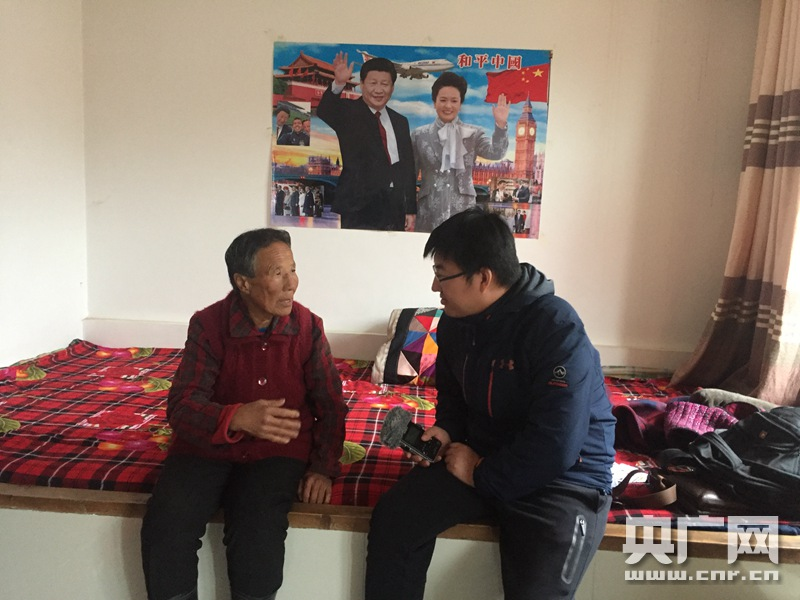

革命老区脱贫攻坚的“阜平探索”

唐宗秀接受记者采访。
2012年，习近平总书记踏雪来到这里调研指导扶贫工作，她挽着习近平总书记手臂走过黄泥墙的画面让人印象深刻。
唐宗秀小孙子：奶奶，我画的城堡也挂到屋子里。
黄墙、青瓦、塑钢窗，在河北阜平县骆驼湾村，唐宗秀的农家乐这就要开业了。73岁的唐宗秀是土生土长的骆驼湾村人。她的一本扶贫手册，记录着骆驼湾村的变迁。
记者：2013年（家庭）收入才2100块钱？
唐宗秀和她老伴：嗯。这会就多了……
五年前，骆驼湾村村民的年人均收入还不到900块钱。这几年，在政府的帮扶下，他们流转土地、发展林果种植、办起农家乐，村里年人均收入现在已涨到4000块钱左右了。
说到马上要开的十九大，唐宗秀说她的愿望是代表们能不能讨论讨论，啥时候农村人能像城里人一样，看病那么方便。
唐宗秀：希望（以后）农村有个好医生、好医院，拿个药，打个针更方便了。
党代会首次设立的“党代表通道”，在过去7天中迎来了60位十九大代表。这成为联通亿万群众与十九大的重要桥梁、沟通中国共产党与世界的窗口，也是展现新时代中国信心与力量的重要舞台。
眼下正是丰收季。在骆驼湾村中心，戏台上，人们歌唱着丰收的喜悦。戏台下，人们畅谈着美好的未来。
村民女：苹果树再待个三年几年就挂果啦，就能分红了。
村民男：就等那一天，等习主席再来。